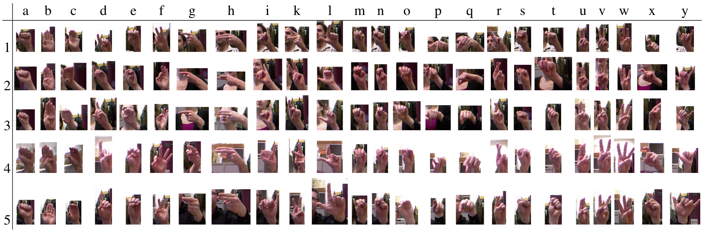
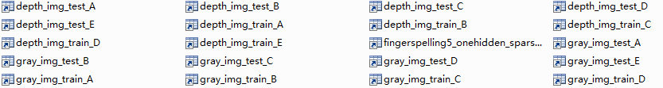

Deep learning：三十一(数据预处理练习)
前言:
本节主要是来练习下在machine learning(不仅仅是deep learning)设计前的一些数据预处理步骤，关于数据预处理的一些基本要点在前面的博文Deep learning：三十(关于数据预处理的相关技巧)中已有所介绍，无非就是数据的归一化和数据的白化，而数据的归一化又分为尺度归一化，均值方差归一化等。数据的白化常见的也有PCA白化和ZCA白化。
实验基础：
本次实验所用的数据为ASL手势识别的数据，数据可以在网站http://personal.ee.surrey.ac.uk/Personal/N.Pugeault/index.php?section=FingerSpellingDataset
上下载。关于该ASL数据库的一些简单特征：
该数据为24个字母（字母j和z的手势是动态的，所以在这里不予考虑）的手势静态图片库，每个操作者以及每个字母都有颜色图和深度图，训练和测试数据一起约2.2G（其实因为它是8bit的整型，后面在matlab处理中一般都会转换成浮点数，所以总共的数据大约10G以上了）。
这些手势图片是用kinect针对不同的5个人分别采集的，每个人采集24个字母的图像各约500张，所以颜色图片总算大约为24*5*500=60k。当然了，这只是个大概数字，应该并不是每个人每个字母严格的500张，另外深度图像和颜色图像一样多，也大概是60k。而该数据库的作者是用一半的图片来训练，另一半用来测试。颜色图和深度图都用了。所以至少每次也用了3w张图片，每张图片都是上千维的，数据量有点大。
另外发现所有数据库中颜色图片的第一张缺失，即是从第二张图片开始的。所以将其和kinect对应时要非常小心，并且中间有些图片是错的，比如说有的文件夹中深度图和颜色图的个数就不相等。并且原图的rgb图是8bit的，而depth图是16bit的。通常所说的文件大小指的是字节大小，即byte；而一般所说的传输速率指的是位大小，即bit。
ASL数据库的部分图片如下：

一些matlab知识：
在matlab中，虽然说几个矩阵的大小相同，也都是浮点数类型，但是由于里面的内容（即元素值）不同，所以很有可能其占用的文件大小不同。
Imagesc和imshow在普通rgb图像使用时其实没什么区别，只不过imagesc显示的时候把标签信息给显示出来了。
dir：
列出文件夹内文件的内容，只要列出的文件夹中有一个子文件夹，则其实代表了有至少有3个子文件夹。其中的’.’和’..’表示的是当前目录和上一级的目录。
load:
不加括号的load时不能接中间变量，只能直接给出文件名
sparse:
这个函数中参数必须为正数，因为负数或0是不能当下标的。
实验结果：
这次实验主要是完成以下3个小的预处理功能。
第一：将图片尺度归一化到96*96大小，因为给定的图片大小都不统一，所以只能取个大概的中间尺寸值。且将每张图片变成一个列向量，多个图片样本构成一个矩阵。因为这些图片要用于训练和测试，按照作者的方法，将训练和测试图片分成2部分，且每部分包含了rgb颜色图，灰度图，kinect深度图3种，由于数据比较大，所以每个采集者（总共5人）又单独设为一组。因此生产后的尺度统一图片共有30个。其中的部分文件显示如下：

第二：因为要用训练部分图像来训练deep learning某种模型，所以需要提取出局部patch（10*10大小）样本。此时的训练样本有3w张，每张提取出10个patch，总共30w个patch。
第三：对这些patch样本进行数据白化操作，用的普通的ZCA白化。
实验主要部分代码及注释：
下面3个m文件分别对应上面的3个小步骤。
img_preprocessing.m:

%% data processing: % translate the picture sets to the mat form % 将手势识别的图片数据库整理成统一的大小（这里是96*96），然后变成1列，最后转换成矩阵的形式，每个采集者的 % 数据单独放好（共ABCDE5人），为了后续实验的需要，分别保存了rgb颜色图，灰度图和深度图3种类型 %add the picture path addpath c:/Data addpath c:/Data/fingerspelling5 addpath c:/Data/fingerspellingmat5/ matdatapath = 'c:/Data/fingerspellingmat5/'; %设置图片和mat文件存储的位置 img_root_path = 'c:/Data/fingerspelling5/'; mat_root_path = 'c:/Data/fingerspellingmat5/'; %将图片归一化到的尺寸大小 img_scale_width = 96; img_scale_height = 96; %% 开始讲图片转换为mat数据 img_who_path = dir(img_root_path);%dir命令为列出文件夹内文件的内容 if(img_who_path(1).isdir) %判断是哪个人操作的，A,B,C,... length_img_who_path = length(img_who_path); for ii = 4:length_img_who_path %3~7 % 在次定义存储中间元素的变量，因为我的电脑有8G内存，所以就一次性全部读完了，如果电脑内存不够的话，最好分开存入这些数据 %读取所有RGB图像的训练部分和测试部分图片 color_img_train = zeros(img_scale_width*img_scale_height*3,250*24); color_label_train = zeros(250*24,1); color_img_test = zeros(img_scale_width*img_scale_height*3,250*24); color_label_test = zeros(250*24,1); %读取所有gray图像的训练部分和测试部分图片 gray_img_train = zeros(img_scale_width*img_scale_height,250*24); gray_label_train = zeros(250*24,1); gray_img_test = zeros(img_scale_width*img_scale_height,250*24); gray_label_test = zeros(250*24,1); %读取所有depth图像的训练部分和测试部分图片 depth_img_train = zeros(img_scale_width*img_scale_height,250*24); depth_label_train = zeros(250*24,1); depth_img_test = zeros(img_scale_width*img_scale_height,250*24); depth_label_test = zeros(250*24,1); img_which_path = dir([img_root_path img_who_path(ii).name '/']); if(img_which_path(1).isdir) %判断是哪个手势,a,b,c,... length_img_which_path = length(img_which_path); for jj = 3:length_img_which_path%3~26 %读取RGB和gray图片目录 color_img_set = dir([img_root_path img_who_path(ii).name '/' ... img_which_path(jj).name '/color_*.png']);%找到A/a.../下的rgb图片 %读取depth图片目录 depth_img_set = dir([img_root_path img_who_path(ii).name '/' ... img_which_path(jj).name '/depth_*.png']);%找到A/a.../下的depth图片 assert(length(color_img_set) == length(depth_img_set),'the number of color image must agree with the depth image'); img_num = length(color_img_set);%因为rgb和depth图片的个数相等 assert(img_num >= 500, 'the number of rgb color images must greater than 500'); img_father_path = [img_root_path img_who_path(ii).name '/' img_which_path(jj).name '/']; for kk = 1:500 color_img_name = [img_father_path color_img_set(kk).name]; depth_img_name = [img_father_path depth_img_set(kk).name]; fprintf('Processing the image: %s and %s\n',color_img_name,depth_img_name); %读取rgb图和gray图，最好是先resize，然后转换成double color_img = imresize(imread(color_img_name),[96 96]); gray_img = rgb2gray(color_img); color_img = im2double(color_img); gray_img = im2double(gray_img); %读取depth图 depth_img = imresize(imread(depth_img_name),[96 96]); depth_img = im2double(depth_img); %将图片数据写入数组中 if kk <= 250 color_img_train(:,(jj-3)*250+kk) = color_img(:); color_label_train((jj-3)*250+kk) = jj-2; gray_img_train(:,(jj-3)*250+kk) = gray_img(:); gray_label_train((jj-3)*250+kk) = jj-2; depth_img_train(:,(jj-3)*250+kk) = depth_img(:); depth_label_train((jj-3)*250+kk) = jj-2; else color_img_test(:,(jj-3)*250+kk-250) = color_img(:); color_label_test((jj-3)*250+kk-250) = jj-2; gray_img_test(:,(jj-3)*250+kk-250) = gray_img(:); gray_label_test((jj-3)*250+kk-250) = jj-2; depth_img_test(:,(jj-3)*250+kk-250) = depth_img(:); depth_label_test((jj-3)*250+kk-250) = jj-2; end end end end %保存图片 fprintf('Saving %s\n',[mat_root_path 'color_img_train_' img_who_path(ii).name '.mat']); save([mat_root_path 'color_img_train_' img_who_path(ii).name '.mat'], 'color_img_train','color_label_train'); fprintf('Saving %s\n',[mat_root_path 'color_img_test_' img_who_path(ii).name '.mat']); save([mat_root_path 'color_img_test_' img_who_path(ii).name '.mat'] ,'color_img_test', 'color_label_test'); fprintf('Saving %s\n',[mat_root_path 'gray_img_train_' img_who_path(ii).name '.mat']); save([mat_root_path 'gray_img_train_' img_who_path(ii).name '.mat'], 'gray_img_train','gray_label_train'); fprintf('Saving %s\n',[mat_root_path 'gray_img_test_' img_who_path(ii).name '.mat']); save([mat_root_path 'gray_img_test_' img_who_path(ii).name '.mat'] ,'gray_img_test', 'gray_label_test'); fprintf('Saving %s\n',[mat_root_path 'depth_img_train_' img_who_path(ii).name '.mat']); save([mat_root_path 'depth_img_train_' img_who_path(ii).name '.mat'], 'depth_img_train','depth_label_train'); fprintf('Saving %s\n',[mat_root_path 'depth_img_test_' img_who_path(ii).name '.mat']); save([mat_root_path 'depth_img_test_' img_who_path(ii).name '.mat'] ,'depth_img_test', 'depth_label_test'); %清除变量，节省内存 clear color_img_train color_label_train color_img_test color_label_test... gray_img_train gray_label_train gray_img_test gray_label_test... depth_img_train depth_label_train depth_img_test depth_label_test; end end
sample_patches.m:
function patches = sample_patches(imgset, img_width, img_height, num_perimage, patch_size, channels) % sample_patches % imgset: 传进来的imgset是个矩阵，其中的每一列已经是每张图片的数据了 % img_width: 传进来每一列对应的那个图片的宽度 % img_height: 传进来每一列对应的那个图片的高度 % num_perimage: 每张大图片采集的小patch的个数 % patch_size: 每个patch的大小，这里统一采用高和宽相等的patch，所以这里给出的就是其边长 [n m] = size(imgset); %n为大图片的维数，m为图片样本的个数 num_patches = num_perimage*m; %需要得到的patch的个数 % Initialize patches with zeros. Your code will fill in this matrix--one % column per patch, 10000 columns. if(channels == 3) patches = zeros(patch_size*patch_size*3, num_patches); else if(channels == 1) patches = zeros(patch_size*patch_size, num_patches); end end assert(n == img_width*img_height*channels, 'The image in the imgset must agree with it width,height anc channels'); %随机从每张图片中取出num_perimage张图片 for imageNum = 1:m%在每张图片中随机选取1000个patch，共10000个patch img = reshape(imgset(:,imageNum),[img_height img_width channels]); for patchNum = 1:num_perimage%实现每张图片选取num_perimage个patch xPos = randi([1,img_height-patch_size+1]); yPos = randi([1, img_width-patch_size+1]); patch = img(xPos:xPos+patch_size-1,yPos:yPos+patch_size-1,:); patches(:,(imageNum-1)*num_perimage+patchNum) = patch(:); end end end
patches_preprocessing.m:
% 提取出用于训练的patches图片，针对rgb彩色图 % 打算提取10*10(这个参数当然可以更改，这里只是默然参数而已)尺寸的patches % 每张大图片提取10（这个参数也可以更改）个小的patches % 返回的参数中有没有经过白化的patch矩阵patches_without_whiteing.mat，每一列是一个patches % 也返回经过了ZCAWhitening白化后了的patch矩阵patches_with_whiteing.mat，以及此时的均值向量 % mean_patches，白化矩阵ZCAWhitening patch_size = 10; num_per_img = 10;%每张图片提取出的patches数 num_patches = 100000; %本来有30w个数据的，但是太大了，这里只取出10w个 epsilon = 0.1; %Whitening时其分母需要用到的参数 % 增加根目录 addpath c:/Data addpath c:/Data/fingerspelling5 addpath c:/Data/fingerspellingmat5/ matdatapath = 'c:/Data/fingerspellingmat5/' % 加载5个人关于color图像的所有数据 fprintf('Downing the color_img_train_A.mat...\n'); load color_img_train_A.mat fprintf('Sampling the patches from the color_img_train_A set...\n'); patches_A = sample_patches(color_img_train,96,96,10,10,3);%采集所有的patches clear color_img_train; fprintf('Downing the color_img_train_B.mat...\n'); load color_img_train_B.mat fprintf('Sampling the patches from the color_img_train_B set...\n'); patches_B = sample_patches(color_img_train,96,96,10,10,3);%采集所有的patches clear color_img_train; fprintf('Downing the color_img_train_C.mat...\n'); load color_img_train_C.mat fprintf('Sampling the patches from the color_img_train_C set...\n'); patches_C = sample_patches(color_img_train,96,96,10,10,3);%采集所有的patches clear color_img_train; fprintf('Downing the color_img_train_D.mat...\n'); load color_img_train_D.mat fprintf('Sampling the patches from the color_img_train_D set...\n'); patches_D = sample_patches(color_img_train,96,96,10,10,3);%采集所有的patches clear color_img_train; fprintf('Downing the color_img_train_E.mat...\n'); load color_img_train_E.mat fprintf('Sampling the patches from the color_img_train_E set...\n'); patches_E = sample_patches(color_img_train,96,96,10,10,3);%采集所有的patches clear color_img_train; %将这些数据组合到一起 patches = [patches_A, patches_B, patches_C, patches_D, patches_E]; size_patches = size(patches);%这里的size_patches是个2维的向量，并不需要考虑通道方面的事情 rand_patches = randi(size_patches(2), [1 num_patches]); %随机选取出100000个样本 patches = patches(:, rand_patches); %直接保存原始的patches数据 fprintf('Saving the patches_without_whitening.mat...\n'); save([matdatapath 'patches_without_whitening.mat'], 'patches'); %ZCA Whitening其数据 mean_patches = mean(patches,2); %计算每一维的均值 patches = patches - repmat(mean_patches,[1 num_patches]);%均值化每一维的数据 sigma = (1./num_patches).*patches*patches'; [u s v] = svd(sigma); ZCAWhitening = u*diag(1./sqrt(diag(s)+epsilon))*u';%ZCAWhitening矩阵，每一维独立，且方差相等 patches = ZCAWhitening*patches; %保存ZCA Whitening后的数据，以及均值列向量，ZCAWhitening矩阵 fprintf('Saving the patches_with_whitening.mat...\n'); save([matdatapath 'patches_with_whitening.mat'], 'patches', 'mean_patches', 'ZCAWhitening'); % %% 后面只是测试下为什么patches_with_whiteing.mat和patches_without_whiteing.mat大小会相差那么多 % % 其实虽然说矩阵的大小相同，也都是浮点数，但是由于里面的内容不同，所以很有可能其占用的文件大小不同 % % 单独存ZCAWhitening % fprintf('Saving the zca_whiteing.mat...\n'); % save([matdatapath 'zca_whiteing.mat'], 'ZCAWhitening'); % % % 单独存mean_patches % fprintf('Saving the mean_patches.mat...\n'); % save([matdatapath 'mean_patches.mat'], 'mean_patches'); % % aa = ones(300,300000); % save([matdatapath 'aaones.mat'],'aa');
参考资料：
Deep learning：三十(关于数据预处理的相关技巧)
http://personal.ee.surrey.ac.uk/Personal/N.Pugeault/index.php?section=FingerSpellingDataset